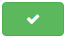

Same Post - создан специально для автоматизации размещения записей в сообщества ВКонтакте. Идеально подойдет как для организаторов совместных покупок, так и для владельцев сообществ. Наша цель состоит в том, чтобы создать удобный и простой в использовании сервис автоматической публикации отложенных записей. Мы постоянно совершенствуем наш сервис и лучшие функции еще впереди...
Сколько записей можно опубликовать на стене сообщества в сутки?
50 публикаций в сутки — оптимальное количество, позволяющее успешно поддерживать активность сообщества и в то же время беречь ленты участников от «затопления» бесконечным потоком записей, среди которых теряются обновления друзей и прочая важная информация.
Сколько записей можно опубликовать в сутки от имени пользователя?
150 публикаций в сутки - спросите почему? Только сами Администраторы могут ответить вам на этот вопрос.
Пользователю при использовании Сайта запрещается:
6.3.4. загружать, хранить, публиковать, распространять и предоставлять доступ или иным образом использовать любую информацию, которая:
(а) содержит угрозы, дискредитирует, оскорбляет, порочит честь и достоинство или деловую репутацию или нарушает неприкосновенность частной жизни других Пользователей или третьих лиц;
(б) нарушает права несовершеннолетних лиц;
(в) является вульгарной или непристойной, содержит порнографические изображения и тексты или сцены сексуального характера с участием несовершеннолетних;
(г) содержит сцены бесчеловечного обращения с животными;
(д) содержит описание средств и способов суицида, любое подстрекательство к его совершению;
(е) пропагандирует и/или способствует разжиганию расовой, религиозной, этнической ненависти или вражды, пропагандирует фашизм или идеологию расового превосходства;
(ж) содержит экстремистские материалы;
(з) пропагандирует преступную деятельность или содержит советы, инструкции или руководства по совершению преступных действий;
(и) содержит информацию ограниченного доступа, включая, но не ограничиваясь, государственной и коммерческой тайной, информацией о частной жизни третьих лиц;
(к) содержит рекламу или описывает привлекательность употребления наркотических веществ, в том числе «цифровых наркотиков» (звуковых файлов, оказывающих воздействие на мозг человека за счет бинауральных ритмов), информацию о распространении наркотиков, рецепты их изготовления и советы по употреблению
(л) носит мошеннический характер;
(м) а также нарушает иные права и интересы граждан и юридических лиц или требования законодательства Российской Федерации.
Полные и всегда актуальные правила пользования Сайтом ВКонтактеФункция расписания была придумана для того, чтобы при создании новой записи не нужно было вводить дату и время её публикации, так как каждая новая запись после её сохранения будет автоматически занимать ближайшую свободную дату и время.
Для создания расписания следует выбрать в выпадающем меню , где требуется его создать;
Добавить временной блок нажав на кнопку ;
В появившемся временном блоке выбрать нужное время публикации;
Нажать на кнопку  для сохранения.
Таким образом можно запланировать до 50 временных блоков для сообщества и 150 для личной страницы.
Так будет выглядеть готовое расписание:
Если Вам потребуется отредактировать расписание, то следует просто изменить временной блок, либо удалить его, нажав крестик в правом верхнем углу.
ВАЖНО! Если вы изменили расписание, то запланированные записи не меняют свою дату и время публикации (в дальнейшем будет введена кнопка для распределения уже запланированных записей по измененному расписанию).
Чтобы воспользоваться расписанием его нужно просто создать, а далее при создании новых записей, пункт «Опубликовать по расписанию» будет включен по умолчанию - это означает, что сохранённая публикация займёт свободную дату и время.
Если Вы не желаете в данный момент планировать публикацию по расписанию, то можно выбрать одну из функций: «Опубликовать немедленно» или «Выбрать дату и время».
Нажать на кнопку ;
В выпадающем меню выбрать куда будет публиковаться запись ;
Ввести текст;
Добавить изображение с "ПК" или "VK" ;
Выбрать время публикации: «Опубликовать немедленно», «Выбрать дату и время», «Опубликовать по расписанию»;
Выбрать нужные опции (если эти опции Вам не нужны, то оставьте их без изменений): «Повторять ежедневно», «От имени пользователя», «Подпись»;
Нажать кнопку «Сохранить» или «Сохранить и продолжить» (после нажатия кнопки «Сохранить и продолжить» текущая запись сохранится и откроется страница добавления следующей записи).
Список сообществ находится в настройках Вашего профиля, нажмите кнопку меню пользователя , в открывшемся меню выберите пункт "Настройки", далее перейдите во вкладку "Cообщества" (если требуется обновить список сообществ, то нажмите на кнопку "Обновить список сообществ")
Нажмите кнопку меню пользователя и в открывшемся меню выберите пункт "Настройки", нажмите на кнопку "Обновить привязку "